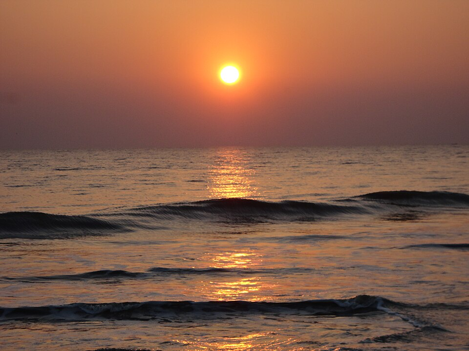

Region · Beach & coast
Kuakata
A wide, uncrowded bay where the sun rises over one end of the beach and sets into the sea at the other end — the only spot in Bangladesh where you see both from the same shore.

Kuakata sits at the tip of the Patuakhali coast, three to four hours south of Barisal by road and launch. It's quieter than Cox's Bazar, smaller in scale, and less developed — which is precisely its appeal. The beach runs 18 km; in the early morning you'll often have a long stretch to yourself. The bay curls just enough that the sun rises and sets into the sea from the same shoreline — a genuinely rare geography.
What to do
- Sunrise and sunset. The main event. Arrive at the eastern end before dawn; return to the western point in the late afternoon. Photographers come from Dhaka for both in a single visit.
- Rakhine village. A surviving Rakhine (Arakanese Buddhist) settlement where women weave traditional cloth on backstrap looms. One of a handful left in Bangladesh — a quiet, respectful visit rewards the effort.
- Fatrar Char. A mangrove island reached by trawler — a dense, atmospheric mini-Sundarbans. Spotted deer, crocodiles and winter birds.
- Gangamati forest. The coastal tree belt behind the dunes — shaded cycling or walking, with wild boar tracks and the distant crash of surf.
How long to plan
Two nights is the sweet spot: arrive in the afternoon, catch sunset; wake before dawn for sunrise; take a boat to Fatrar Char; leave on day three. Add a night if you want to slow down or explore the village hinterland by bicycle.
Getting there
The classic route is bus or launch from Dhaka to Barisal (5–8 hours), then a local bus or tempo south to Kuakata (another 3–4 hours). Direct overnight buses from Dhaka do the whole stretch in one go. Many travellers combine Kuakata with the Sundarbans — both sit on the Bay of Bengal coast and the overland link via Khulna is manageable.
Avoid the monsoon. June to September brings rough seas and heavy rain. The beach is at its best November through March; the shoulder months of October and April are warm and passable.